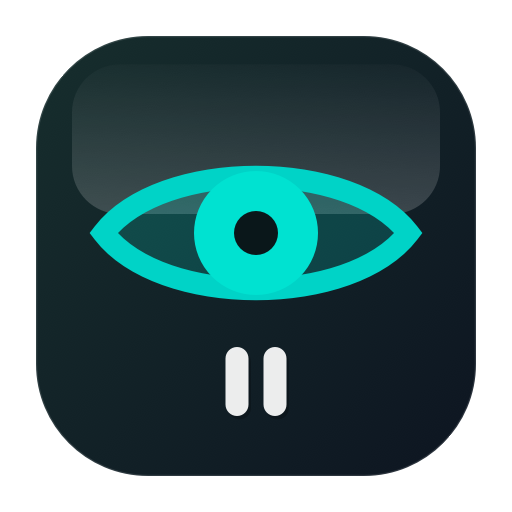

macOS menu-bar app
Eye Break is a tiny native macOS app that reminds you to pause at the right moments. It counts active computer time, shows a calm full-screen overlay, and stays quiet when you step away.
Why
Eye Break gives you a small external rhythm: look away often, stand up sometimes, and avoid counting idle time as work time.
What it does
Eye Break stays in the menu bar and gives you the controls you need without turning breaks into another app to manage.
Short 20-second eye breaks plus longer stand breaks, each with independent timing.
The break appears across connected displays so the reminder is hard to miss.
Use the overlay controls when a break lands at the wrong moment.
Pause reminders for 30 minutes or one hour directly from the menu bar.
Change intervals, durations, snooze length, and launch-at-login from settings.
Start Eye Break automatically when you sign in, so the menu-bar reminder is always ready.
See active time, expected breaks, completed breaks, skipped breaks, and snoozes.
Schedule
The app ships with 20-minute eye breaks and 60-minute stand breaks, then lets you tune the rhythm.
Timers advance only while you are actively using the computer. Idle time does not quietly drain the schedule.

A small native menu-bar utility for healthier screen rhythm on macOS.
Current version: 0.1.6